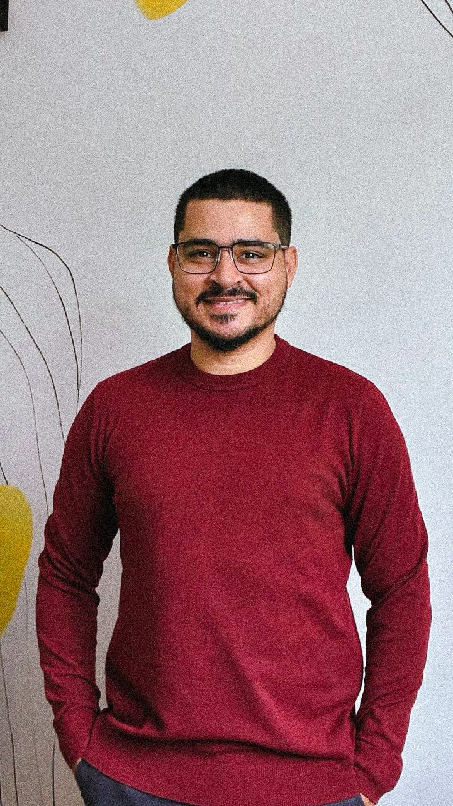

Lucas de Sousa Oliveira
Senior IT Project Manager | Scrum Master (SAFe)
Summary
IT Project Manager and Scrum Master with 6+ years of experience leading distributed software teams for US and international clients. I manage several projects at the same time, coordinate dependencies between teams and use delivery metrics to improve planning. Recent work includes coordinating Salesforce integration projects and building internal automations.
Results
50% → <20%
sprint churn
<50% → >70%
delivery predictability
−50%
ticket waiting time with a chatbot integration
Experience
Scrum Master · Avenue Code (international clients)
Sep 2020 – Present
- Led up to four cross-functional Scrum teams at the same time (frontend, backend, QA and DevOps) working across time zones.
- Managed six projects end to end as Project Manager, covering planning, risks, dependencies and go-live.
- Coordinated the web, integration and Salesforce teams on projects that send leads and opportunities from a SaaS platform into Salesforce for car dealerships. The integrations were delivered on schedule.
- Supported Salesforce testing through the user interface and worked with the Salesforce team to investigate Apex errors.
- Used Azure DevOps to coordinate dependencies with external teams that did not work in Jira.
- Reduced sprint churn from 50% to under 20% and improved predictability from under 50% to over 70% by agreeing on a single sprint goal with leadership and tightening sprint planning.
- Reduced lead time by 10% by simplifying the workflow and automating Jira steps.
- Built a chatbot integration that notifies owners of blocked tickets, cutting ticket waiting time by more than 50%.
- Built an AI-assisted tool that checks documents before the operations team uploads them, saving about four hours per week.
- Implemented Jira automations and validations that save about three hours per week, plus an alert that reminds Product Owners when stories need refinement.
- Built delivery dashboards in Jira, Power BI and Grafana, and automated recurring reports for the sales and customer service teams.
- Introduced SAFe practices such as PI Planning and moved teams from Scrum to Kanban when it suited the work better.
- Took part in hiring, onboarding and performance follow-up with HR and leadership.
Programming Instructor and Engineering Intern
Before 2020
- Taught programming fundamentals in C++ and Python.
- Completed internships during the Electrical Engineering degree.
Skills and tools
- Delivery
- Scrum, Kanban, SAFe 6.0, PI Planning, risk and dependency management, release and go-live planning, stakeholder communication
- Metrics
- Lead time, cycle time, predictability, cumulative flow, sprint churn
- Tools
- Jira, Jira Plans, Confluence, Atlassian Rovo, Azure DevOps, Microsoft 365, Microsoft 365 Copilot, Power Automate, Power BI, Grafana, Google Apps Script, ServiceNow, Salesforce
Education and certifications
B.S. in Electrical Engineering · UNIBH, 2019
Professional Scrum Master I (PSM I) · 2022
SAFe 6.0 Agilist · 2024
Languages
English: fluent
Portuguese: native